Deep Cross-Division Network for Product-and-Ratio Feature Interactions in Industrial Ranking / 面向工业排序乘积与比率交叉的深度交叉除法网络
Mikhail Trapeznikov、Sofia Gulevskaia、Maksim Utushkin、Aleksandr Poslavsky 和 Alexander D’yakonov 把一条倒数分支放入工业排序器的显式交叉块，检验模型能否保留基础计数、去掉一批手工比率，同时改善短视频精排。第一作者署名 AI VK 与莫斯科国立大学。预印本初版于 2026 年 11 月 20 日提交，列于 11 月 23 日的 arXiv 公告。正文脚注声明 WSDM ’27 接收，所示 DOI 的 Crossref 查询返回 404，会议状态尚无独立核验。作者仓库可以打开，本次未运行其中的模型或训练流程。arXiv:2611.27514 · 作者实现
标准交叉层只由输入的非负整数幂构造交互，无法直接形成比率和归一化计数里的倒数项。排序器因而常把比率预先做成特征，但这些衍生输入会扩张交叉层，需要检验在保留分子、分母的前提下，能否由交叉算子直接学出这些关系。
1. 背景和问题
在多阶段短视频推荐系统中，精排每次要给一批召回候选估计观看、分享、点赞和全屏等行为，并在固定预算内提供可用于下游融合的分数。计数、比率和上游预测在这条链路的位置各不相同。某个内容累计得到一百次点击，单看计数可以解释它的反馈规模，配上曝光后才能理解行为密度。一个候选只有十次曝光便获得四次点击，另一个获得四百次点击却有一万次曝光，二者的可信度和转化信号不同。原始计数同时保留了样本规模，显式比率则让交叉层容易识别归一化方向，一起输入常常有效，也会让一个训练时钟下的相同上游计数在模型里出现多遍。
先在特征平台算好比率，有两个实际好处。它允许业务人员固定时间窗、过滤条件、统计对象和分母规则，也让较小的排序模型不必从有限样本里重新拟合除法。缺点出现在组合增长上。当天、近七日、近三十日的点击与曝光，各自还可以按用户、作者、品类或者流量入口聚合。分子和分母每扩大一组，物化的交叉项也跟着扩张。若比率只由已在模型输入中的操作数构成，新增特征主要交付一个现成的数学关系，但仍然需要特征存储、预处理、请求组包及后续交叉编码。即使只看模型侧，矩阵交叉块的投影规模跟编码后的宽度相连，不能把删除一个比率的影响局限于最后的打分头。
有些看起来像比率的产物无法安全移除。分子也许来自去重人数，分母却来自某种可观看会话，而特征集中只有播放次数和曝光次数。某个历史冷启动率还可能内嵌时间衰减、先验平滑、分桶填充值或者保护小分母的回退规则。两个现存字段只有在定义和实际线上生成时间都对齐时，才构成这个转换的基础。本文有意把问题缩小到保留原操作数的衍生比率，回应的是有确定上游依赖的一部分特征。对无法从现存输入还原的聚合或隐含统计，本实验没有提供可删证据。用依赖图逐项核查被移除列，比直接按名称匹配带有率或比值的字段更接近论文设定。
DCNv2 的出发点是让有用的显式交叉易于学习。每次用当前表示的线性投影与固定的原始输入逐坐标相乘，堆叠之后可以累积多项式阶数。点击次数和视频长度有乘积关系时，这个结构提供了很方便的归纳偏置。但用同一种操作去表达点击除以曝光，增加层数通常只能拓展正整数幂组成的多项式。在有限、避开零的输入区间，普通连续网络或多项式仍可能拟合目标。这里的差异是选择何种基础运算，可以在相同输入和预算下学到可用曲线，以及当分母跨数量级变化时需要多大模型才能稳住误差。作者用“直接表达”的说法限制在交叉块的显式代数支持内。
AFN 通过对数变换学习实数或负数阶，EulerNet 用复指数相关表示建模交互，两者表明推荐特征的非正整数幂早有成熟研究。DCDN 的研究问题更具体：既然流行的手工统计经常需要保留一个正幂分子、给另一维乘一个倒数，能否只增加受限的倒数方向，换到更接近矩阵交叉块的运行成本。这个定位也解释了实验为何把模型规模、输入信息和计时层级拆开。更灵活的基线在部分公开任务上占优，不能仅靠证明 DCDN 含有负幂，就推断一个更小的指数族会在分布变化中自动占优。
另一项约束是线上优化目标不同。模型输出多项行为预测之后，业务融合会把某个目标上的局部排序变化扩散到候选重排和最终播放序列。某个分数的会话内正确顺序变多，是离线效果的一个证据。点击打开全屏、分享和观看时长是否在回流用户上改善，则还取决于播放机会、应用内交互和联合效用的决策。原文因此既提供四个独立目标的会话级排序指标，也做用户随机实验评估完整部署。四臂离线配置还能进一步区分输入变更与交叉块变更，弥补线上只有一对全量配置的局限。
成本也需要区分算子、模型和业务服务。增加逆向投影会多出乘加，删除几十项比率可能缩小输入和两条投影的公共宽度，从而抵销新增计算。线上还有编码、动态批处理、路由和其他共用时间，几项的分布并不独立。论文提到生产栈中模型应用约占端到端推荐响应的五分之一，作为重视模型效率的背景比例。在结合后面的三项时间报告时，应以统计对象具体名称为准。不能把这一背景数字当成可直接外推的系统份额，也无法从平均或未指定分位的服务变化恢复用户侧尾延迟。
这项工作把四类可检验命题串在一起。先问理想算子在有非零输入时能形成哪些指数，随后在受控八维问题里检验约分是否容易学习。接着在公开推荐数据分别比较全量输入上的排序质量与缩减输入上的模型侧时延，再对参数容量近似匹配的交叉块做对照。最后，在实际短视频候选生成和精排平台上，以几天日志训练后的一天验证加两周线上实验，观察质量成本能否同时移动。每一类证据有各自的分母，理论阶数、试验机械可恢复性、公开推荐拟合和生产联合干预互相补充。
我最关心的是作者主动保留了放弃比率但不改算子的臂。在这条臂上，观看时长会话级指标从原全输入基线的 0.5589 掉到 0.5152。说明问题并不是把一些空洞、冗余的字段清干净，省时自然发生。作者提出的检验是让另一个表示在同样少的信息上恢复相当部分的质量，然后再面对持有原始比率的生产版本。仅看最后份额和线上增长，会错过中间这一条低质量对照提供的机制证据。它表明手工比率在该任务中确实帮助已有模型排序，也让读者有依据判断替代是否消费了保留的操作数。
2. 方法
2.1 保留操作数的特征视图
作者先将候选特征拆成基础集合与既有的比例派生列。第一个集合允许异质输入，包括后续会编码的统计字段、类别字段和上游模型分数。第二个集合的边界来自可以用保留的基础输入计算的目标比率。两种视图以同一日志、目标和切分定义为比较基础，改变的是比例关系是否由上游预先物化。
符号解释：$\mathcal{B}$ 是基础输入集合，$\mathcal{R}$ 是拟移除的比率集合，$b_{\ell}$ 和 $b_k$ 是比率第 $j$ 项的分子与分母。两者在缩减视图中仍然可用。这个定义声明输入的依赖边界，式中示例并未涵盖任意平滑和归一化实现。训练和推理都应保持两臂各自的输入视图与编码方式。缩减的收益来自重复衍生信号退出，基础操作数以及出现在其他任务头上的原始统计仍需提供。
2.2 同一个状态上的乘积和倒数递推
标准矩阵交叉将上层向量仿射映射到相同维度，然后与原始输入逐元素相乘并走残差。DCDN 把这个残差和乘积项保留，再从同一个当前状态学习一个独立投影，逐坐标乘以固定的原输入倒数。这两个投影不共享权重，各自找出需要与目标坐标相乘或相除的候选信号。同一输出坐标中的多项关系可在这次加和中混合，再交给下游模块，算子内部没有单独预测标签的分支。
符号解释：$x^{(0)}$ 是输入锚，$x^{(\ell)}$ 是第 $\ell$ 层状态，$W_\ell$ 和 $\widetilde W_\ell$ 分别是乘积及倒数的方阵投影，$b_\ell$ 和 $\widetilde b_\ell$ 是各自的偏置，$\odot$ 表示逐坐标乘法。$(x^{(0)})^{-1}$ 表示对向量所有元素分别取倒数，不涉及求逆矩阵。训练标签通过下游输出和排序损失更新两个投影，推理使用同一递推图。对第一层，若第 $k$ 个需要相除的输出坐标以分母 $x_k$ 为锚点，逆向投影的第 $k$ 行可以取到分子 $x_j$，形成 $x_j/x_k$，而同一行的偏置可形成纯倒数 $1/x_k$。
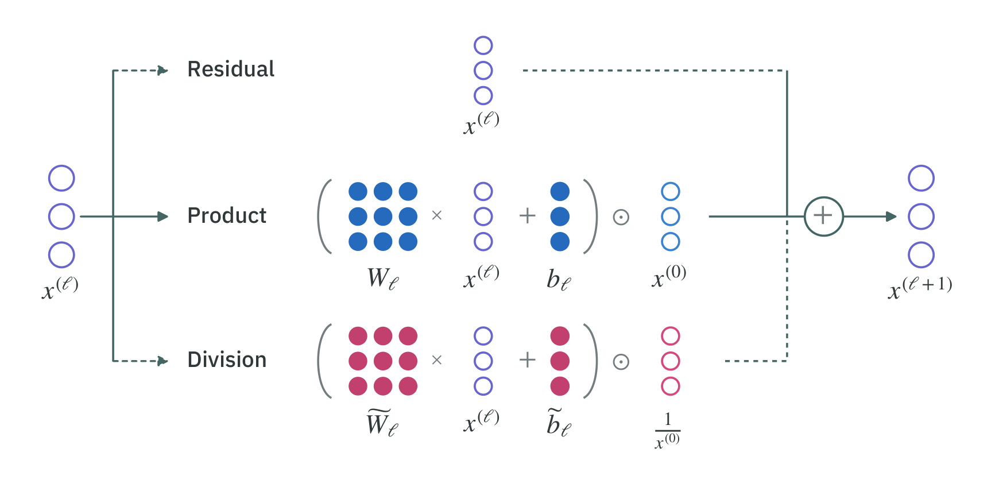
Figure 1 用左侧同一个当前层表示连接三个路径。上方残差把原有值保留到底，使标准特征和上一层刚生成的交互不会强制被重新乘除。中部矩阵和偏置后发生逐元素乘积，右边进入乘法圆点的输入是初始输入向量。下部先用另一组矩阵和偏置，再与初始向量的倒数逐维相乘，两条支路在右端与残差一起得到下一层状态。第二层处理的输入状态变了，分母锚仍取最早的输入坐标。这个区别决定它会生成原始变量的整数幂乘积，不会产生分母由任意中间特征相加而成的通用有理网络。
以一个坐标对应曝光为例，蓝色分支能形成“曝光乘当前线性读出的点击”，红色分支把当前线性读出的点击乘“曝光倒数”，因此可以把两者的符号和规模响应交给同一个输出坐标的下游映射。将这个图理解为“先拟合分子再拟合分母”会产生错误结论，分母没有对应可训练投影，其选取来自原始坐标和实现中的掩码。图中的方阵也提醒了容量对照的必要性。就同一个固定宽度而言，增加一组矩阵确实引入参数和算术，而输入精简后的总成本要重新计算。因此论文另外保留了增加普通交叉网络深度的可比容量对照，以检验结果是否依赖这种关系结构。如果分析实作算子，应进一步区分保留倒数资格的掩码和部署内核能否跳过计算行，这两者分别影响数值和实际成本，图本身只陈述数学路径。
生产实现没有对每一个输入维任意求倒数。作者给定一组已知能作为比例分母的坐标，并用钳制控制近零值，其他坐标在倒数分支中贡献零。该限定让算子只在业务允许的方向上生成负幂。$\varepsilon$ 的实际意义取决于输入缩放和缺省值处理。幅度超过阈值时延续理想的倒数，在阈值内达到饱和，零点还要按符号和缺失处理约定核对。
符号解释：$\rho_\varepsilon$ 是有保护的逐元素倒数，$\operatorname{sgn}$ 提取输入正负符号，$m_j$ 是第 $j$ 维的二值分母资格，$a_j$ 用于替代理想表达里的倒数锚。正的非零输入落入保护区时，倒数输出的幅度不再随分母缩小而上升。原公式把零点的结果交给符号函数约定，论文未给零值、哨兵值或工程掩码构造的部署细节。训练和线上如果使用不同的归一化尺度，一个输入会跨越钳制区间，导致模型过去学到的关系难以复现。
2.3 理想倒数下的 Laurent 指数格点
理论部分假设每个变量非零并使用精确倒数，随后用整数指数向量而非只有正阶的总阶刻画交叉项。一个坐标为负时，它是分母上的幂次。同一个单项式可能有多条生成路径，单看带符号阶数会把复杂结构压回接近零，例如点击与曝光的比率总阶为零，但会随二者改变。附录定理用绝对阶区分路径长度，用带符号阶描述两个极值。
符号解释：$\alpha\in\mathbb{Z}^{d}$ 是整数指数向量，$i$ 指原始特征的位置，$\lVert\alpha\rVert_1$ 是路径可比较的指数幅度，$\deg_\Sigma$ 为正负指数抵消后的有符号总和。正阶取输入作为锚点时，最初的展开项来自初始状态的一个坐标。负阶可借助倒数支路的偏置在第一层直接注入一个负单位指数，这一步消耗一层。然后每层通过另一坐标的仿射混合并乘一个锚，添加或减去一个坐标指数，或者通过残差填满剩余层数。
符号解释：$K$ 是堆叠层数，$\mathcal{A}_K$ 是精确、未遮罩算子的可达指数集合。含有正坐标的指数可以从带该正坐标的输入开始，用不超过 $K$ 次单位移动达到。纯非正且非零的指数须从倒数偏置开始，后续仅有 $K-1$ 步。零向量可由同一变量乘自己的倒数得到。作者用所有系数非负的参数选择证明存在非零系数，避免路径之间抵消。定理给出单项式可能出现的支持，并给出两个可达极值。 它没有证明某个有限宽度模型可以独立指定支持里任意一套系数，也没有将实验部署的遮罩与钳位算子纳入同一个支持定理。
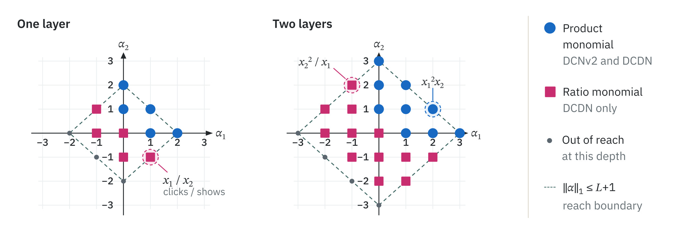
Figure 2 的轴标的是变量的整数指数，横轴对应第一维，纵轴对应第二维。在左图一层的情形，从输入原点之外一个单位开始，交叉一步把乘积扩到二阶，并支持有一个负坐标的比值。例如点击与曝光的比率位于一正一负的位置，若只看有符号总阶，会误以为它与常数一样。右图两层可以落到二阶比值带一个额外正幂的位置，也能形成仅两个负阶的组合。蓝圆标能够由普通交叉和 DCDN 共同生成的正阶项，红色方块则突出加入倒数以后可到达的部分。灰点提醒读者虚线外围之外不可达，而且部分全负点即使在菱形边缘上也达不到。
从步骤看，矩阵投影让上层其他通道的单项式转入任意当前通道，真正的指数加减由该当前通道的固定乘法或倒数锚决定。原始正阶输入自带一次正向单位，因而正侧可以在 $K$ 层结束后到达 $K+1$。全负的最短路径使用首层倒数偏置建种，第一步已算在 $K$ 里，所以全负侧到 $-K$ 为止。以一层为例，理想配置允许两变量之积、单变量倒数，以及一正一负比率，却不会在一层得到两个负变量的乘积。反过来，将这张图迁移到部分维度有分母资格的生产表示，应先删掉被掩掉维度上的负向边，再讨论支持。图里的两层仅用于解释可达几何，原文实验用的是单层。
同一个比率还可能由多层内的乘法与倒数抵消生成。网格只标指数位置，画不出同一位置的多条路径，也没有显示不同参数化是否把某个单项式权重稳定地学到非零。这个限制使作者有必要再做区间内的受控约分，并给出共同缩放的比较反例。
2.4 生产排序器的插入点与多目标输出
生产方案把稀疏类别送入嵌入查表，把保留的计数与模型信号送入分段线性编码，随后经过一层 DCDN 和一个保留的异质交叉模块 HIFORMER。观看历史有相对独立的序列编码路径，任务塔消费交叉表示和用户表示，用于估计多个目标。下游仍把任务信号送入原有的校准与效用融合，而相同的融合配置可令线上试验把差异集中在改动过的算子和输入两处。训练使用共享主干和多个目标头，让所有任务学习同一套显式交叉，而无需每个目标分别启动一次排序。作者没有给出确切损失组合、权重或线上编码维度，因此这些环节以已披露的依赖关系为准。
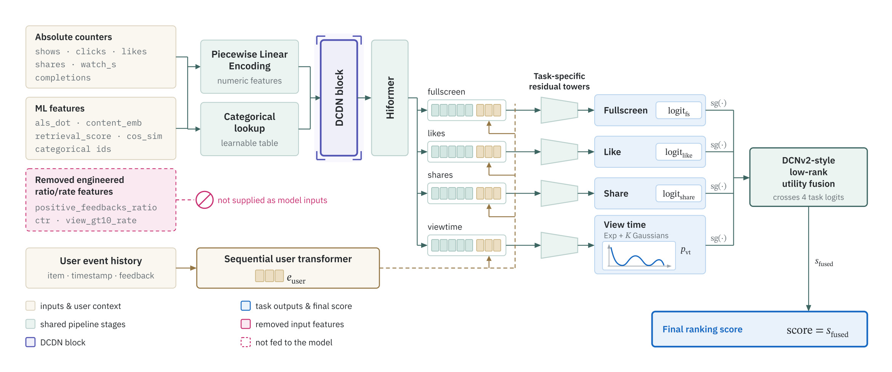
Figure 3 左上是保留的曝光、点击、点赞、分享、观看时长等计数，以及来自上游模型的相似性或分数。左中红色虚线把若干比例特征标为未供给模型，包括点赞等反馈的某些比例、点击率和超过十秒的比例。它们的保留操作数仍能沿主路径到达分段线性编码或类别查表。接在编码后的紫色窄块是实际插入的一层 DCDN，紧随它的是既有 HIFORMER。下方的用户事件包含视频、时间戳和反馈，经序列用户模型变成用户表示并进入后续任务预测。右半部分把全屏、点赞、分享的预测与观看分布分开，后者显示指数成分加多个高斯成分，再沿融合箭头生成最终排序分。图中的梯度隔离符号反映融合接口，正文明确校准和融合的配置在两组间固定。
图里容易混淆的是，最终融合框还标着低秩 DCNv2 风格操作。被换掉的是特征编码后的显式交叉块。下游已有同名风格的效用组合仍照常工作，两者处在不同的位置。同理，移除原始点击率特征也没有取消模型的点击相关学习目标，输入比例作为统计量与任务头输出点击概率属于不同信息。理论定义中的倒数作用于交叉块的输入表示，生产图又明确编码在前。 因而不能仅凭图认定模型逐个精确地重建业务中的原始比例。若分段线性编码对同一个计数进行多坐标展开，实作倒数作用在哪些编码坐标、如何保持分母资格，会影响学到的关系。生产实验验证的是整体排序替换有收益，并未逐列报告被删比例的重建误差。
3. 实验结果
3.1 公共任务、特征维度和排序指标
四个数据集按交互时间顺序切分训练、验证和测试。给样本做历史计数时，统计窗结束于被打分交互时间之前，目标交互和后来的日志均不参与构建。离线模型共用批量大小 4096、AdamW、最多 3000 次优化，固定间隔检查验证损失并早停；每个数据集与架构的学习率先用单独的种子在四个候选值里选定，正式配置训练八个种子。类别字段使用十六维可训练嵌入。论文报告均值及相对 DCNv2 的种子级显著性判断，没有为主表每行提供置信区间。
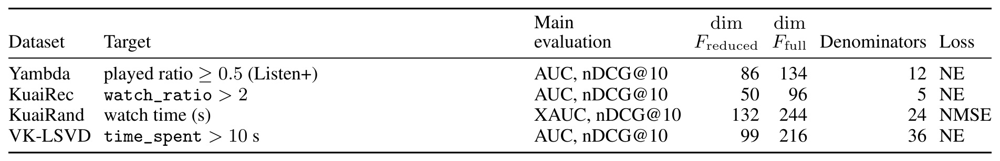
Table 1 的四行任务不能互换。音乐任务 Yambda-50M 把播放比例不低于一半标成 Listen+，按 AUC 和 nDCG@10 评估。KuaiRec 用观看比例大于二构造二元标签，标签代表观看强度，不应解读为真实点击事件。VK-LSVD 把观看超过十秒作为正例。KuaiRand 的监督是连续观看秒数，主排序指标用可比较配对的 XAUC，另报告在重建会话上的 nDCG@10。右三列显示缩减维度、完整维度和获得倒数资格的基础输入数。以 VK-LSVD 为例，从完整二百一十六项变成缩减九十九项，资格数是三十六项，表明一份分母可服务许多不同的派生比率。KuaiRec 只有五项分母资格，完整与缩减却差四十六项，也能看到类似的复用。
最后一列区分二值任务的归一化熵和连续任务的归一化均方误差。前者将交叉熵除以训练集常数基准率的熵，后者用训练标签方差归一化，常量在后续评估固定。同一张表中“主要评估”列是结果指标，“损失”列则是用于优化的量。用时间顺序和历史统计限制保护公共评估，仍难保持公开任务与生产曝光分布一致，所以四行最佳模型不必相同。表中输入维数也不能与生产删去百分比混算，生产口径在后面的独立实验中报告。
符号解释：$\mathcal P$ 集合只包含真值不同的可比较样本对，$\hat y$ 为预测，$y$ 为真值，指示函数统计预测和真值差方向一致的比例，预测同分未满足严格不等式。生产额外限制在同一会话内比较，因此这个数衡量会话排序能否把高观看或正反馈候选排在前面，不直接提供跨会话的概率校准可信度。
符号解释：$n$ 是评估分组规模，$m$ 为实际折损的头部结果数。$\pi$ 和 $\pi^\ast$ 分别是预测与理想次序，线性增益 $g$ 直接使用二元标签或连续观看时长，较后的位置分母更大。KuaiRand 日志没有会话编号，作者对每位用户按时间排，间隔超过三十分钟便开启一个新会话。改变这一分割阈值会改变组内候选和理想基准，应视为指标的一部分。
3.2 从已知操作数恢复商
合成实验对每条样本提供八个正值，其中三个坐标具备分母资格，只用其中一对定义预测目标。基础操作数按照 0.1 到 1000 的对数均匀范围训练，目标是第一分子除以第一分母。所有架构接收相同操作数，不能取到由同一对预先算好的比率。四列测试分别固定参考区间、共同放大全部操作数、单独取大分母和单独取小分母。
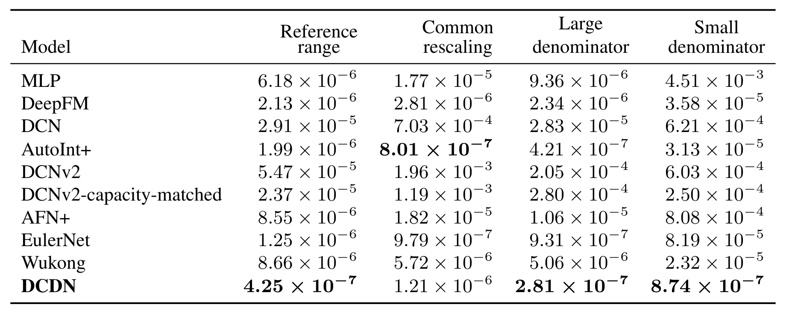
Table 2 的读法是每列越小越好，数量级和基数同等重要。参考区间的 DCDN 为 $4.25\times10^{-7}$，DCNv2 为 $5.47\times10^{-5}$，误差约缩小一百二十九倍。大分母与小分母组的误差分别约为 $2.81\times10^{-7}$ 和 $8.74\times10^{-7}$，两列均为表中最低。普通交叉加深到相似容量也没有把数量级拉近到 DCDN 水平，说明给定这个任务和训练预算，是否存在显式倒数方向影响优化。合成数据仅有一个有用的约分目标，其他分母与干扰变量迫使模型先学习有效关系。这是倒数投影的适配练习，无法代表工业模型里所有多目标耦合的难度。
共同缩放一列是重要反例。操作数同时乘十后，真值仍保持商，DCDN 的误差 $1.21\times10^{-6}$ 好过常规 DCNv2 的 $1.96\times10^{-3}$，却高于 AutoInt+ 的 $8.01\times10^{-7}$ 和 EulerNet 的 $9.79\times10^{-7}$。因此“对普通交叉改进约一千六百倍”和“这一列只排第三”可以同时成立。结构中存在理论上的尺度不变项，不等于训练出的模型只使用这些项。拟合也可能混入恒等、偏置和乘积信号。更重要的是所有测试区间仍处于训练取值支持，最小分母仍大于倒数钳位的阈值。实验支持在覆盖过的多尺度取值中容易学会商，未验证零值、先验回退、量纲变更或超出训练尺度后的表现。若把它变成线上特征替换门槛，应有明确的零曝光及小分母策略，并对共同缩放测试另外看误差，而不能把理想公式的代数不变量作为模型实测结果。
表中的归一化均方误差依赖对应目标方差，倍数是各测试列内相同口径的误差比。大分母列和小分母列的目标尺度不同，不能用表中误差离得近去推断两个子集的绝对误差也相近。保留更大范围的绝对误差分位，可以进一步看受限倒数在工程区间中的一致性。
3.3 完整视图的质量与缩减视图的容量对照
全输入实验给每个架构相同的物化比率。这用于比较架构在信息量相同的环境中是否仍能产生差异。缩减输入实验则在已经去掉比率以后比较模型侧耗时，并用增加 DCNv2 交叉层深度的方式构造近似同非嵌入参数对照。区分这两组对照，能避免将全输入质量搭配缩减模型时间，从而把二者合成一条并不存在的实测效率曲线。
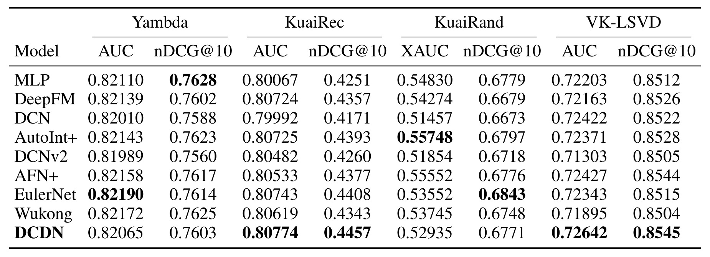
Table 3 的八个指标列按四数据集分组。相对于标准 DCNv2，DCDN 在四个任务的主指标与头部排序上都提高。例如 KuaiRec 的 AUC 从 0.80482 到 0.80774，头部 nDCG 从 0.4260 到 0.4457。VK-LSVD 的 AUC 从 0.71303 到 0.72642，头部指标从 0.8505 到 0.8545。前者在这组基线中两项均为最高，后者也是，但后者的第二项只比 AFN+ 的 0.8544 高 0.0001，并没有逐方法显著性证据。Yambda 的 AUC 中，DCDN 的 0.82065 高于 DCNv2 的 0.81989，却低于 EulerNet 的 0.82190，头部次序也落在几个基线之后。
KuaiRand 更能说明为何要保留两种排序指标。DCDN 的 0.52935 高过 DCNv2 的 0.51854，八个对照中的六个却有更高的 XAUC，AutoInt+ 达到 0.55748。头部 nDCG 中 EulerNet 的 0.6843 高于 DCDN 的 0.6771。一个任务的连续观看真值、候选采样和组定义都会牵动这两类指标。全输入同一任务中的正差值可作为替换普通交叉的证据；跨数据集将这些 AUC、连续 XAUC 和 nDCG 直接求均值会把不同统计量混成一个尺度。作者给出的种子级显著性说法限定在 DCDN 对普通 DCNv2 的排序改进，不能扩成每个单元都优于最近的基线，更不能由此预告线上时长涨幅。
同一张表看近似结构模型时，Yambda 的 MLP 在头部次序拿到 0.7628，甚至略高于 Wukong 的 0.7625。这提示在输入已经含有派生统计的情况下，若只关心该任务上头部位置表现，显式交叉结构未必是最急迫的变更。相比之下，KuaiRec 的 AUC 对普通交叉只增加 0.00292，头部指标增加 0.0197，两个数字来自不同排序权重。若部署只交换少量靠前席位，头部 nDCG 提供了更贴近该目标的辅助观察，但没有写出稳定换席的数量或内容侧构成。VK-LSVD 的主指标差相对突出，头部增量却小得多，同样反映两种排序指标各自的分母。
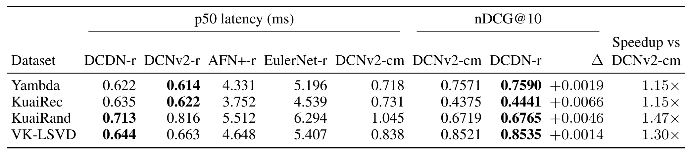
Table 4 首先按毫秒列出 A100 上缩减视图、固定批量 8192 的 eager 中位时延，后半部分列出近似同参数量的普通交叉和 DCDN 的 nDCG@10。普通缩减版本与加深容量版本在表里分开，因而能够看到加速比右列的分母。以 KuaiRand 为例，DCDN 为 0.713 ms，普通缩减 DCNv2 为 0.816 ms，加深的容量对照为 1.045 ms。1.47 倍来自后者比前者，质量也由 0.6719 到 0.6765，提升 0.0046。KuaiRec 的质量绝对差更大，0.4375 到 0.4441，但对应加速约 1.15 倍。四数据集的提升在 0.0014 到 0.0066 之间。
与普通缩减版直接比较时，有正也有负。Yambda 的 DCDN 为 0.622 ms 而 DCNv2 为 0.614 ms，KuaiRec 为 0.635 ms 而对照为 0.622 ms。KuaiRand 和 VK-LSVD 则更快。AFN+ 或 EulerNet 给负数阶更通用的计算路径，在这个同批环境的毫秒水平明显更高。近似同容量的普通交叉是更深的串行递推，DCDN 在一层内部多出独立投影，因此时间改善也反映层结构、核发射和可并行程度，不能单纯解释为算术数量更少。固定批量的模型计时排除了生产请求路由、特征读取和在线排批，还没有序列级与服务级尾延迟。因而表中最高的 1.47 倍只能用于说明当前容量匹配和运行条件下的批级中位差。
具体到 Yambda，完整视图的 DCDN nDCG 为 0.7603，同架构缩减到 0.7590 仍然接近，但这只是该口径下的两个测点。即便同视图容量匹配，论文没有给逐数据集确切非嵌入参数数目与每个 kernel 成本。若内存而非模型深度限制并发，应单独报告峰值显存、激活量和批处理利用率。若单请求候选很少，批量 8192 的时延优势也可能不保留。因此适用结论是“同缩减输入、这一具体容量匹配和计时设置下，DCDN 质量与耗时同时占优”。
3.4 工业多目标四臂离线验证
生产每次训练用六天交互，接下一天日志验证。四个候选离线臂共享任务、校准和融合，从两种算子与两种视图构成。这里目标比较同一会话内对应行为的 XAUC。离线表既能看同视图换算子，也能看相同算子移除比率后的变化，部署时用的是两处同时改变的对角组合。
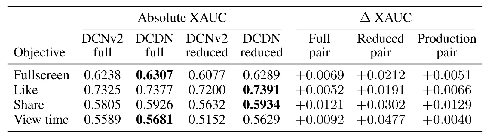
Table 5 左面给出四个绝对值，右面列出不同对照。真正部署列把缩减输入 DCDN 与完整输入 DCNv2 相比。全屏从 0.6238 到 0.6289，点赞从 0.7325 到 0.7391，分享从 0.5805 到 0.5934，观看时长从 0.5589 到 0.5629。差值分别为 0.0051、0.0066、0.0129 和 0.0040，是 XAUC 概率尺度上的绝对差，乘一百才可写成百分点，不能与接下来的线上相对增幅混用。全屏和观看时长的全输入 DCDN 仍比缩减臂更高，删比率没有普遍提高绝对质量。
观看时长还提供了恢复关系的典型案例。删除比率后，DCNv2 从 0.5589 降到 0.5152；在相同缩减输入上使用 DCDN，上升 0.0477 到 0.5629。模型部分重获旧比例曾提供的排序信息，且对部署基线仍有 0.0040 的余量。将 0.0477 当成线上改进，会误用缺少比率的弱对照。分享目标的缩减版 DCDN 略超过全输入 DCDN，提示不同任务对输入冗余和归纳偏置的响应可能不同。四个臂在验证集提供关于模型和输入作用的分解，但仍是模型重新训练后的结果，不能把相邻差值视为固定参数下某个张量的局部作用或总体可加的因果效应。
配对次序还能用来检验查询口径。例如全屏的完整对照差为 0.0069，缩减对照差为 0.0212，生产对照差为 0.0051。同一模型名在三个分母下可以报出很不同的收益。分享改动后较高的绝对值出现在缩减实验臂，观看较高的绝对值出现在完整实验臂。若只能保留最小服务输入，还需测每个头的线下校准与多目标出分融合。该表对每个目标只看会话内顺序，没有说明模型是否保持候选间概率刻度，也没有风险用户分桶下的不确定度。
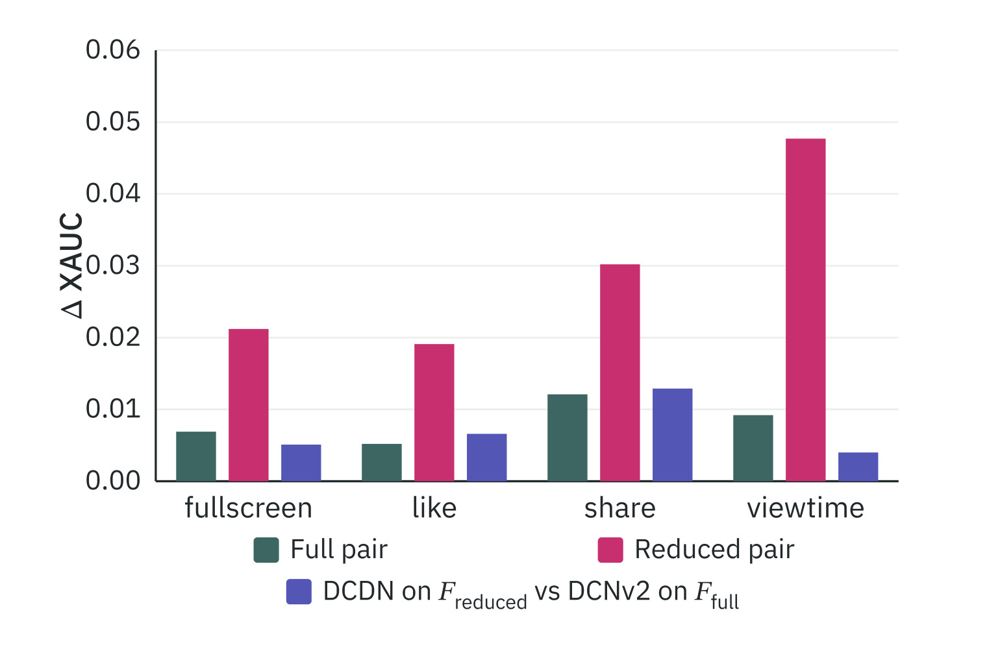
Figure 4 的横轴为四个行为预测，纵轴是会话 XAUC 差。绿色对应完整视图上的同输入对照，红色对应缩减视图上的同输入对照，蓝色才对应真正部署的缩减 DCDN 对完整 DCNv2。四组里红柱都比较高，它说明基础模型移除手工比率后掉得更多，同时也说明该视图中专用的倒数通道有更大的补偿空间。观看时长红蓝柱之间距离最大，这组差值支持在实验资源允许时应保留四臂离线对照，避免只提交绝对最大的柱子作为发布结果。
图和数表使用相同的数据，不能算两份独立的质量证据。图的价值是把不同分母同时展示出来，使工程验收能按问题选择正确的配对。如果问题是生产替换是否通过，应读取蓝柱；如果问题是少了同样一组比率以后选择哪个架构，应读取红柱；如果原输入不打算缩减，则用绿色作为上界参考之一。观看时长的离线差最小并非上线观看时长一定最弱，它与各指标样本规模、目标分布和在线曝光重排都有关系，该图没有置信区间和单用户分布。
3.5 线上用户行为与生产服务时间
用户随机分配进入两个变体连续十四天。实验组把显式精排交叉块从 DCNv2 更换为 DCDN，同时去掉目标比率输入。控制组保留原交叉块和比率。作者称对用户级聚合使用实验前数据做 CUPED 调整，再进行双侧 t 检验，列出的指标均达到 $p<0.01$。实际流量配比、实验日期、各指标区间和不同时段基数并未公开，应按作者报告的实验范围读数。
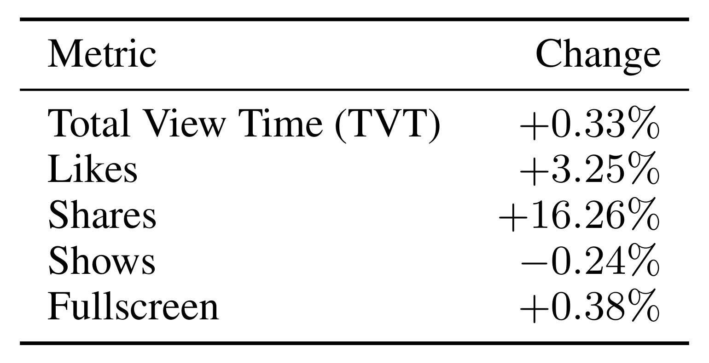
Table 6 的五个数是全时段实验组相对对照组的变化。TVT 增加 0.33%，点赞加 3.25%，分享加 16.26%，全屏点击加 0.38%，曝光数减 0.24%。若分享的基准率很低，相对变化看着很大，但论文没有报告绝对用户人均分享量及分享事件基线，无法把 16.26% 换成绝对新增量或者大致覆盖人数。曝光变化体现被测试方案改变了最终流量体验，不应按曝光不变假设直接拼成每次曝光的用户行为变化。线上汇总采用用户级聚合，也不等同于按视频或按请求平均。
观看时长增幅小于分享增幅，绝不意味着分享贡献了大部分的在线效用。比较两项需知道被优化目标的权重以及事件对业务的效用尺度，还要看到新增分享对应的用户和内容切片。这次线上实验验证的是输入与模型联合变更在该产品里的效果。没有一组线上单改输入或单改交叉块的臂来读取单项因果增益，四臂离线补足的是排序证据，不能代替线上效应拆分。曝光减少且用户行为增加，是实验中观察到的组合变化。
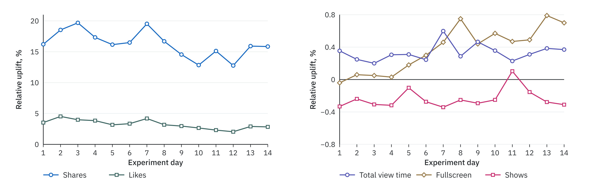
Figure 5 左右纵轴刻度不同。左边分享的曲线在十几个百分点附近波动，点赞在几个百分点附近。右边用更细的零附近尺度看观看时长、全屏与曝光，三条曲线的振幅看似类似，但不能拿左右面板的线高比较绝对效果。按论文描述，分享、点赞与观看时长在十四天里均为正，全屏十三天为正，左边展示的分享并非每日同一个百分比。全屏曲线开头在零附近之后才变得稳定，右边可见曝光曾有一天略高于零，和十四天累计曝光下降并不矛盾。
这些逐日方向提供时间稳定性线索，也能检查量级是否完全由一天驱动。它们不提供逐日显著性结论。相同用户跨天重复、日流量及分母变化都会使逐日点彼此相关，因此不能把十四个正号当成十四次独立实验。若要追踪线上尾部风险，适合按用户历史长度、冷启动内容及小分母覆盖去审计曝光和增益。作者没有公开可进行这些切片的原始日志，也没有检验创作者分布和弱势群体的变化。
生产服务使用 Triton Inference Server，动态批量可由 1 到 16384。作者在 RTX6000 Pro 上实现融合特征编码与交叉计算，并分别报告融合编码对自身 eager 大约七倍、融合 DCDN 对自身 eager 大约两倍。这里两个分母来自同类组件，不能把它们作为 DCDN 对已有线上 DCNv2 的倍数，更不能汇入前面的 A100 表。
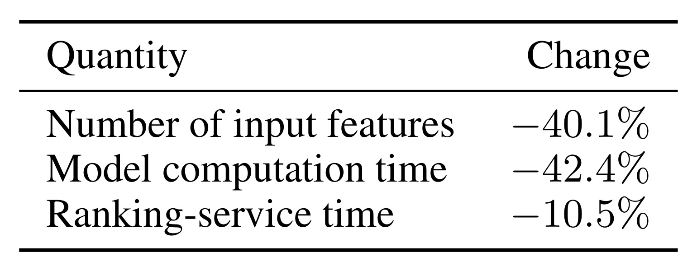
Table 7 三行的分母互不相同。模型输入字段数减少 40.1%，分母为完整视图中的输入特征数。模型计算时间下降 42.4%，分母为线上对照的模型计算时间。排名服务时间下降 10.5%，分母为对照排序服务的该项时间统计。删比率减少编码和交叉的输入宽度，结构变化引入倒数与额外投影，融合内核并排批一同决定结果。观察到计算时间下降更快，符合其他服务环节只部分受特征变动影响，但这三行不足以独立识别每一步的耗时份额。
论文没有报告这两个时间量的绝对值、指定分位或单请求候选数，不能据此估算其他集群的 P99 或将节省直接当作容量提升。宽模型在大批量下可能受到不同硬件瓶颈，实时体系还要受请求等待与上下游扇出影响。即使张量计算下降，线上可合并的请求形状和队列深度也可能同步改变。更可迁移的证据是：在这个明确的动态批处理和融合配置中，减特征与替换交叉块的部署组合同时改善服务与用户指标，而各自的机制归因需要更细的同负载对照。
在工程日志里重现表格时，需要为请求端测相同候选数和流量负载，也需要对同一模型计算端记录具体批大小与排队策略。禁用或启用某种融合内核会改变同一个数学图的内存流量和核发射，所以除了常规对照，再给一条保留相同 kernel 配置的同负载线能够帮助区分成本来源。表中只报告目标服务的合并干预数值，无法判断切换硬件后是否仍保有相同比例的时间改善。
4. 总结
4.1 论文建立的关系
DCDN 对显式交叉的扩张相当具体，从只用初始输入作乘积锚，变为两组投影分别乘初始输入与它的倒数。因此，旧特征仍可沿残差保留，第一层就能把合格的基础计数变成分子分母关系。理想模型的 Laurent 支持解释为什么这种做法与单纯增加普通交叉深度有差别。合成约分、等信息排序和等容量缩减对照逐一补足了这种表达能力的实践证据，最后生产四臂与用户随机试验共同说明这一路线在一套短视频排序栈中具备替换资格。由于被移出的比例确实对原模型有用，部署收益也为特征侧依赖清查提供了更直接的依据。
4.2 局限与验证方向
- 理想定理假定每一维非零、可以做精确倒数，部署则使用掩码和带阈值的倒数。分段编码是否保持操作数相同的量纲、缺省值是否进入保护区，以及负分母的实际支持还需另外校验。对带先验或区域回退的比率，现有输入即使名称相似也未必足够。
- 合成约分仅有一个有用目标，四组测试仍在训练数值支持之内；共同缩放排名第三。理论中可表达的尺度不变项不能保证训练结果自动具备尺度不变性，更没有给出接近零、负值或尚未见到的长尾下的全域误差。
- 公共数据标签和候选组织不同，KuaiRand 的六个对照在 XAUC 更高。种子级与标准 DCNv2 的显著性也不能外推到与任意最优基线的差异，尤其 VK-LSVD 头部指标与 AFN+ 极接近。
- 生产两个改动合并上线，十四天结果来自单个服务。作者没有公开真实流量、样本量和置信区间，也没有内容方与用户分群的福利证据。分享是相对变化，曝光供给和使用行为同时发生改变。
- 模型耗时、排序服务耗时、端到端推荐响应和容量处在不同层级。公开定批计时与 RTX6000 Pro 组件融合时间采用不同硬件和对照，缺少分位和请求负载时，不能直接回答其他硬件上的稳定吞吐。
下一步可小批重放按分母样本量和比率定义分桶的精排记录，保留完整与缩减两种视图，并在四个模型与输入组合里同时量测非嵌入参数、头部排序和校准偏差。重点看匿名或新内容的分母缺省区间，以及移除手工比例最直接的观看时长对。若真实归一化包含预先指定的平滑偏置，则单独对比保留平滑统计、只用近零倒数和从原始计数重建三种输入，便于定位结构收益与信息损失。
值得进一步复查相同融合配置下不同候选数、并发和设备带来的 P95/P99 差异，按输入编码、交叉核、共享交叉和请求排批各层比对；如要独立确定部署中的哪一项改动带来行为改善，需同时规划能拆分的线上臂或在同流量逐步开放。原文源码可用于核验公共复现入口与分母资格掩码的实现，生产定义和用户实验不能从公开实现直接得到。